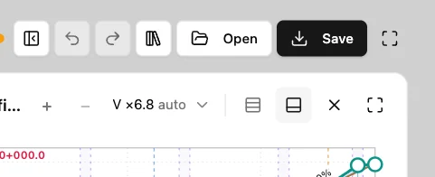
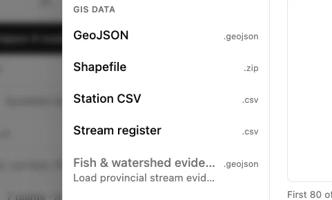
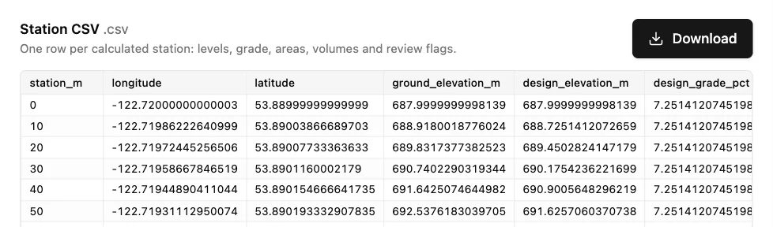

Export the station table
Use the Hillside access training project in Engineering workbench. Select the road you want to report before opening Save & export.
1. Open the export options
Select Save in the header to open Save & export.

2. Choose Station CSV
In the GIS data group, select Station CSV. The preview shows the station records for the export.

3. Download and check the columns
Select Download in the Station CSV preview. Open the .csv in a spreadsheet and find station_m, ground_elevation_m and design_elevation_m. The first station on this training road is 0 m.
